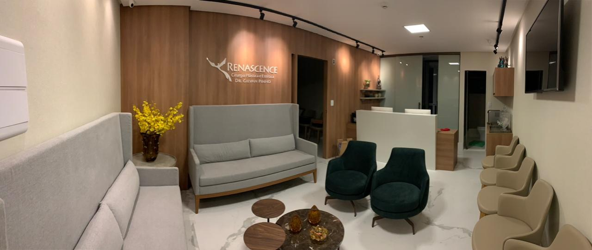

Início · A clínica
A Renascence, no Alpha Medical Center.
Renascence Cirurgia Plástica · Edf. Alpha Medical Center · Av. Luís Viana Filho, 7416, salas 815 a 818 · Alphaville I · Salvador – BA · CEP 41701-005. Consultas com hora marcada.
A clínica
A Renascence
A Renascence Cirurgia Plástica é o nome com que atende a Clínica de Cirurgia Plástica Dr. Gilvan Pinho, aberta em 4 de setembro de 2015, com o Dr. Gilvan como sócio único.

Onde fica
Endereço
Edf. Alpha Medical Center
Av. Luís Viana Filho, 7416, salas 815 a 818 · Alphaville I (Paralela) · Salvador – BA · CEP 41701-005
É o endereço da ficha da clínica no Google e do perfil do Dr. Gilvan na SBCP.
Quando
Horário
Horário de atendimento
Horário da ficha da clínica no Google. Atendimento com hora marcada — confirme com a equipe.
Rota
Mapa e rota
Na chegada
Estrutura
Estacionamento coberto
Pago, segundo a ficha do Google.
Cadeira de rodas
Entrada, estacionamento, assento e banheiro acessíveis, segundo a ficha do Google.
Pagamento
Cartão de crédito e de débito, segundo a ficha do Google.
Agendamento
Necessário, pelo WhatsApp ou pelo telefone.
Agendamento
Como agendar
- Mande uma mensagemPelo WhatsApp (71) 98205-7627, o número da ficha da clínica no Google.
- Ou liguePara o telefone (71) 3901-1631.
- Combine o horárioA equipe confirma o dia e o horário da consulta.
Dúvidas frequentes
Perguntas comuns
Qual é o horário?
A ficha do Google informa segunda a sexta, das 8h às 18h. As consultas são com hora marcada: confirme com a equipe.
Tem estacionamento?
Sim, estacionamento coberto pago, segundo a ficha do Google.
A clínica é acessível?
A ficha do Google informa entrada, estacionamento, assento e banheiro acessíveis para cadeira de rodas.
Aceita convênio?
Confirme com a equipe as condições de atendimento e de pagamento.
Agende
Uma conversa com o Dr. Gilvan, na Renascence.
Atendimento com hora marcada no Edf. Alpha Medical Center, em Alphaville I. Fale com a equipe pelo WhatsApp (71) 98205-7627 ou pelo telefone (71) 3901-1631.